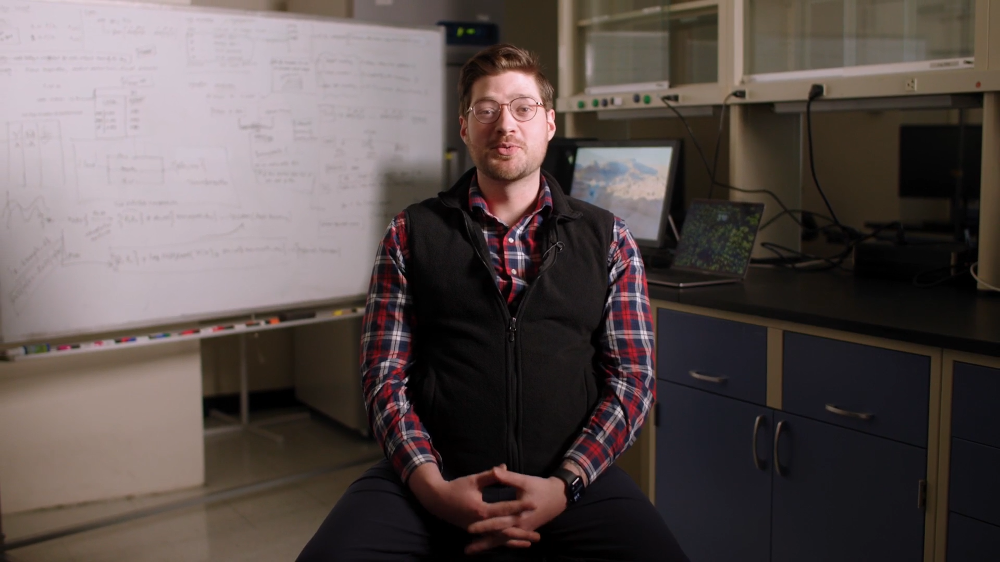

Hi,
I'm Frankie
I'm a PhD student passionate about the intersection of artificial intelligence, bioinformatics, and healthcare — building systems that bring equitable, transparent, and affordable healthcare access to everyone.

About Me
I am a concurrent MSCS &
PhD Student in Artificial Intelligence
Hello, I'm Frankie — a second-year Ph.D. student and concurrent M.S. in Computer Science
candidate at Oregon State University. My research focuses on applying machine learning and
knowledge graph reasoning to biomedical data for rare disease discovery and clinical decision
support. I’m particularly interested in building trustworthy AI systems that can verify their
own reasoning — integrating symbolic and neural representations to create transparent,
interpretable AI for healthcare.
Before graduate school, I served as a combat medic in the U.S. Army National Guard and worked
in emergency and clinical medicine. These experiences shaped my commitment to making equitable
and data-driven healthcare accessible to all through intelligent, verifiable systems.
My Journey
Academic & ProfessionalJoined the National Guard
Ohio Army National Guard – 68W Combat MedicEnrolled at University of Cincinnati
Major: BiologyTransferred to The Ohio State University
B.A. in BiologyMedical Assistant
Cleveland ClinicPrivate Contractor for FEMA
Disaster Response EMSEnrolled at Oregon State University
B.S. in Computer ScienceResearch Assistant – Ramsey Lab
Oregon State UniversityStarted Ph.D. in Artificial Intelligence & Concurrent M.S. in CS
Oregon State UniversityGraduate Research Assistant – Ramsey Lab
Oregon State UniversityPublications
F.M. Hodges, et al., “Using AI to Improve Diagnosis and Treatment of Rare Diseases: A Chat Agent for Equitable and Accessible Healthcare,” Artificial Intelligence in Medicine (AIME), LNCS vol. 15735, Springer, 2025. doi:10.1007/978-3-031-95841-0_35
F.M. Hodges, et al., “White Paper on Radiant,” Oregon State University, 2025. radiant.rtx.ai/whitepaper
Presentations
Poster Presentation: Radiant: An Agentic RAG System for Rare Diseases. Presented at Artificial Intelligence in Medicine, Pavia, Italy, 2025.
Demonstrative Presentation: Radiant. Presented at Stanford & Research to the People Rare Disease Hackathon, San Francisco, California, 2024.
My Projects
Radiant
A chat-agent prototype for rare disease knowledge discovery and clinical decision support, integrating retrieval-augmented generation (RAG) with knowledge graph verification.
Node Embedder
A Python pipeline that iterates through biomedical knowledge graph nodes, extracts entity descriptions, embeds them into a vector store, and enables semantic search and analytics on biomedical relationships.
RTX-KG2
A large biomedical knowledge graph maintained by the Ramsey Lab. I assist in maintaining, debugging, and improving the knowledge ingestion and reasoning pipelines.
My Resume
You can preview my resume directly below or download a copy for your reference.